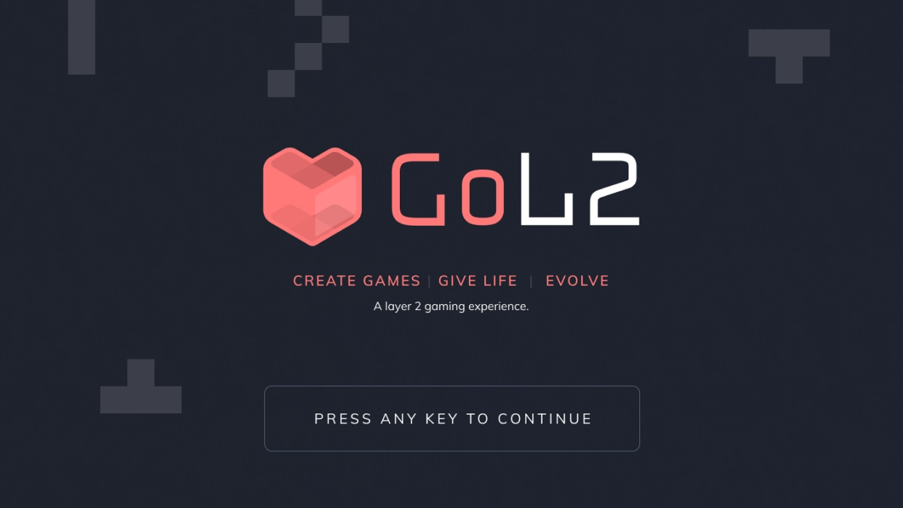
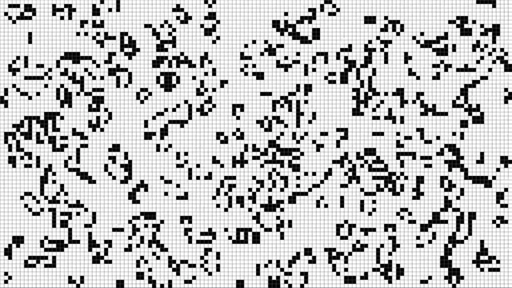
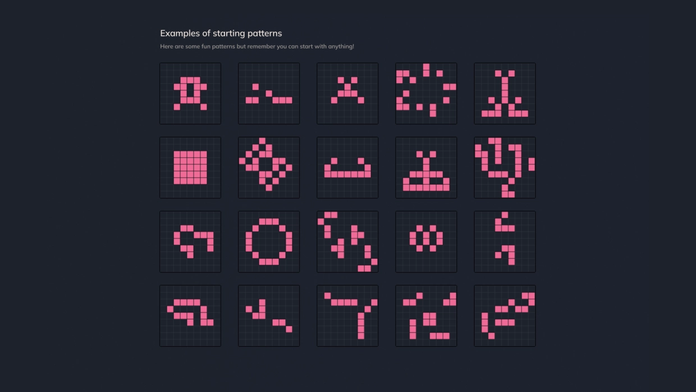
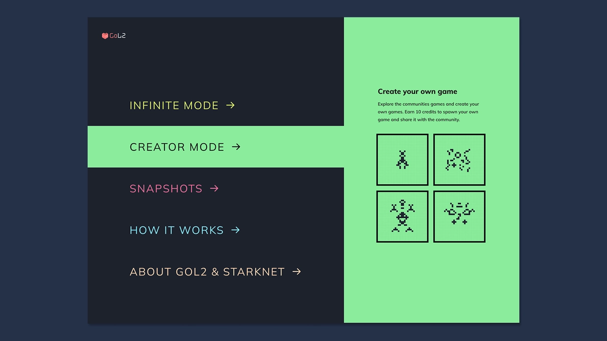
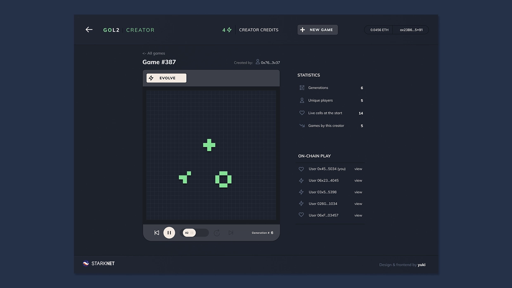
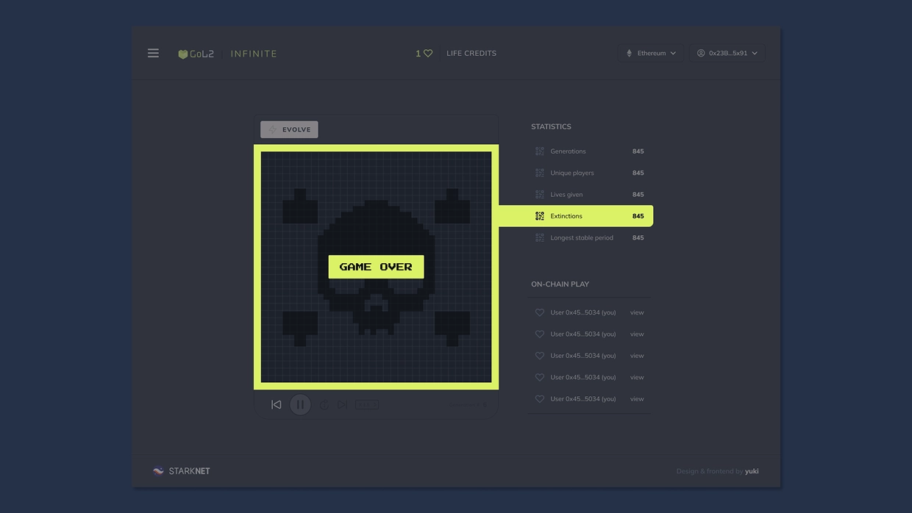

GoL2 • Co-founder, Design & Research (Yūki studio)
Making complex on-chain systems understandable and usable

As co-founder of Yūki, a product design and research studio, we worked with teams across Web3 to translate emerging technical capabilities into usable products. A consistent focus in our work was making complex, abstract systems understandable and accessible to a broader audience.
At the time, many blockchain platforms were difficult for non-technical users to engage with. Starknet is a network built on Ethereum that allows more complex applications to run more efficiently, making it possible to build richer, more dynamic systems directly on-chain rather than relying on central servers. A core challenge in this space was not just technical capability, but accessibility. Many applications exposed powerful systems but lacked the clarity needed for people to understand how to engage with them or why they mattered.
GoL2 was created as a way to explore this. I led product design, research, and delivery, working closely with engineers and ecosystem partners. It is an on-chain version of Conway’s Game of Life, built entirely as a smart contract, where all logic and state exist on-chain rather than on a central server. The original Game of Life is a cellular automaton where simple rules give rise to complex, evolving behaviour, making it a natural foundation for exploring blockchain infrastructure.

Research played a central role in shaping the product. Early testing showed that while the system itself was compelling, many users struggled to understand how to engage with it or why it was interesting. The barrier was not functionality, but legibility and meaning. Rather than adding traditional game mechanics, we focused on making the system itself more understandable, explorable, and responsive.

We introduced a lightweight educational layer to explain core concepts in simple terms, simplified how users created and evolved patterns through rapid prototyping, and designed clearer feedback loops to make system behaviour visible over time. A strong emphasis was placed on interaction clarity and system feedback, helping users understand the consequences of their actions within a shared, persistent environment.

The result was a minimal but expressive system where users could create, evolve, and observe simulations entirely on-chain. Each interaction functioned as a transaction, reinforcing the idea of a shared system without central ownership. As the Starknet ecosystem grew, GoL2 became one of the most widely used applications on the network. This clarity and accessibility drove strong adoption and sustained engagement, demonstrating that complex on-chain systems could be made understandable through thoughtful design and research.


Outcomes
- Over 258,000 users and 726,000 transactions recorded on Starknet
- One of the most used applications on Starknet during its early growth phase
- Higher engagement than comparable applications on the network
- Demonstrated viability of fully on-chain, computation-heavy applications
- Widely referenced as an early example of autonomous on-chain systems
- Helped establish Yūki’s reputation in designing early stage Web3 products